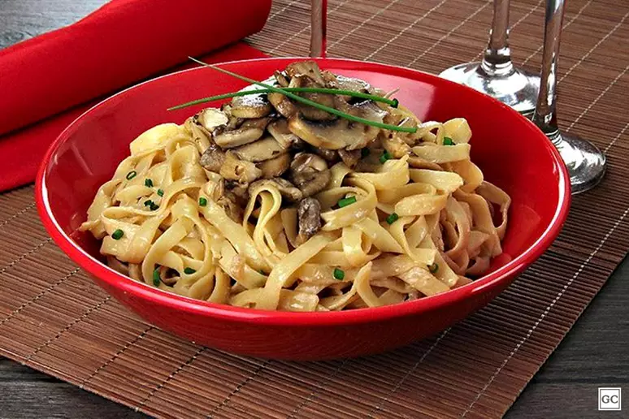

Fettuccine with mushrooms

Description
This fancy Parisian recipe puts together the best of pasta and mushrooms
in one single plate. It's easy to make and set to impress your guests with
its appearance and taste.
Ingredients
- Fettuccine pasta (500g)
- Chopped chives for garnish
- 2 tablespoons butter
- 2 tablespoons olive oil
- 1 chopped onion
- 150g sliced paris mushrooms
- 150g sliced shimeji mushrooms
- 1/2 cup soy sauce
- 1 can milk cream (300g)
- Salt and chopped chives to taste
Steps
-
First of all, cook the pasta according to the instructions on the
package. Drain and set aside.
-
For the sauce, heat a pan with the butter and olive oil and fry the
onion until wilted. Then add the mushrooms and fry over high heat for 3
minutes.
- Add the soy sauce and cook for another 3 minutes.
- Add the cream, season with salt and chives to taste and mix.
-
Turn off the heat, mix with the cooked pasta and transfer to a serving
dish. Finally, garnish with chopped chives and serve immediately.